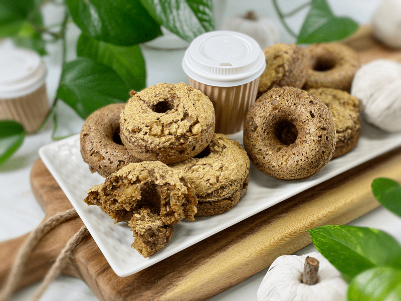
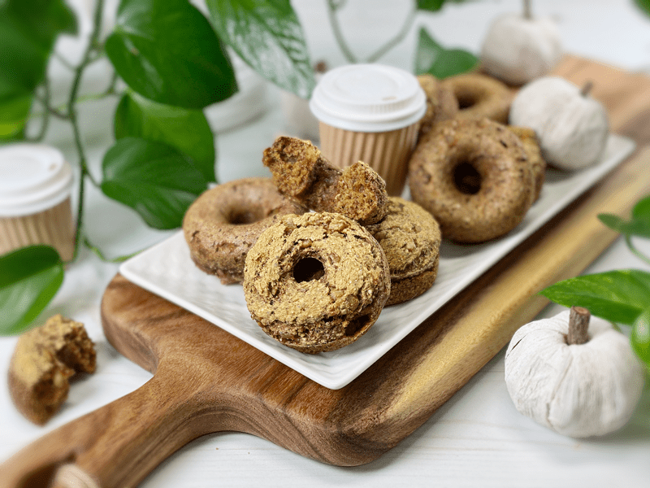
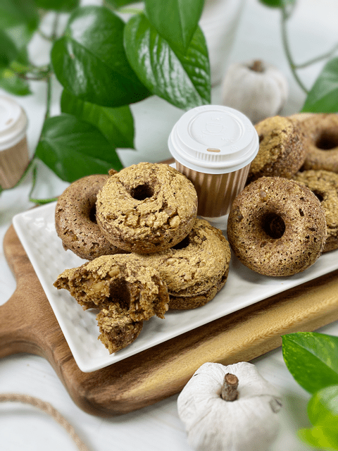

Pumpkin Spice Ginger Cake Donuts | Baked | Oil-Free | Nut-Free | Flour-Free
These cake donuts turned out moist, delicious, and flavorful without any need for frosting or icing! The pockets of chewy, warming ginger brought these donuts to a level that makes my eyes roll heavenward. They taste amazing straight out of the oven, having sat in a sealed container on the counter for a few days, stored in the fridge, or even thawed after being frozen. We love them as-is, and I hope you do too!

Currently, ginger has been finding its way into my recipes, and I am thoroughly enjoying it. It’s a warming food that helps with lowering cholesterol, aids in digestion, helps combat nausea, and so much more. As much as I love ginger, I am a bit particular about it. I often find it too “hot” in flavor, so to help lower the ginger’s spicy heat in these donuts, I used crystallized ginger, which has a little sugar coating to it. It not only counteracted the compounds that produce the heat but also helped to balance the bitterness that can sometimes shine through.
I have a strong feeling that some of you may ask if you can use fresh or powdered ginger instead. It should be noted that I haven’t tried any other version, so it will be an experiment that you will have to take on. So what is crystallized ginger?
Crystallized Ginger
Crystallized ginger is also known as candied ginger or glacé ginger (glacé means “icy” in French, and this ginger looks like it’s coated in ice crystals). It’s basically fresh ginger that has been cooked in sugar water and rolled in sugar. You can try using 1.5 teaspoons of ground ginger for the 3/4 cup of crystallized ginger. But keep in mind that this recipe is already low in sugar, so you may need to add a bit more in order to compensate. If you are not a fan of ginger, yet found yourself reading through this recipe, you can try replacing it with an equal amount of dried allspice, cardamom, cinnamon, mace, or nutmeg.
Donut Topping Options
If the idea of serving up a naked donut is just too much to bear, I have some options that you may enjoy. You can simply start off by topping the donut with crushed pecans before you slide them into the oven. Push them in a little bit so they don’t fall off once cooked and cooled. I did this to half of the donut for Bob’s sake. He loved the added texture.

You know me and my silly close-up photos. They may not be the most attractive photos, but I feel that it is important to show you what to expect when baking these donuts. The top of the donut splits a little under the heat, creating a slightly crunchy texture. Trust me, it plays off the moist center, making it a joyful bite.
They do raise somewhat, giving a cake-like texture. They are not airy or dense… somewhere right in between. The bottoms are smoother in texture, which I found aesthetically pleasing, giving me options in how I wanted to serve them–right side up, or bottom up. The inner texture, as mentioned already, is that of cake. There are small pockets of air, chewy bits of crystallized ginger, and a whole lot of yumminess surrounding it!
Thoughts and Tips
- When it comes to pans, I prefer to cook in silicone pans since I don’t have to oil or line them. I purchased mine off of Amazon, which came as a set of two, yielding a total of 14 donuts. You can view them (here).
- To keep the sugar down, I used 2 Tbsp of maple syrup in conjunction with liquid stevia. The stevia basically just boosts the maple syrup without having to add more. If you are not a fan of Stevia, feel free to double the maple syrup.
- Make sure that the pumpkin puree is free from other ingredients. If you prefer to make your own, click (here) for a simple raw version.
- If using ginger isn’t appealing or available to you, substitute with raisins, cranberries, or perhaps dried pineapple!
Well, I think I’ve chatted long enough about this recipe. I truly hope you give them a try and enjoy them as much as have. Many blessings and bundles of love, amie sue

Ingredients
Yields 12 donuts
- 1 cup raw whole buckwheat kernels, soaked
- 1 1/2 cups gluten-free rolled oats
- 1/4 cup chia seeds
- 1/4 cup psyllium husks (not powder)
- 1 Tbsp pumpkin spice
- 1 tsp Ceylon ground cinnamon
- 1 tsp sea salt
- 3/4 cup pumpkin puree
- 2 Tbsp maple syrup
- 1/2-1 tsp liquid NuNatural stevia
- 1 cup water
- 1 tsp aluminum-free baking powder
- 1/2 tsp baking soda
- 3/4 cup dried crystallized ginger, diced
Preparation
Soaking the Buckwheat
- Place the buckwheat in a glass or stainless steel bowl, and cover with double the amount of water.
- Add 2 Tbsp raw apple cider vinegar, stir, and cover with a clean dishtowel.
- Let it sit on the counter for 30 minutes to 4 hours.
- Once ready to use, drain and rinse before adding to the food processor.
Mixing and Baking
- Preheat oven to 350 degrees (F) and prepare your donut pan(s).
- I am baking the donuts in silicone pans; therefore I don’t need any oil or parchment paper. One tip when using silicone baking dishes is to place them on a baking pan before loading and transporting them to the oven. Since they are soft and flexible, they can be challenging to handle once full.
- If you use any other type of pan, I recommend oiling each cavity so the batter hopefully doesn’t stick.
- Add the rolled oats, chia seeds, psyllium husks (not powder), pumpkin spice, cinnamon, salt, pumpkin puree, maple syrup, and stevia to the food processor (along with the buckwheat). Process for a full 30-60 seconds.
- Add the baking powder and baking soda, process 10 seconds, remove the lid, and hand stir in the ginger crystals.
- Place the batter in large piping or ziplock bag and snip off the corner, making sure it is large enough for the batter and ginger to easily pass through. Fill each cavity until the batter is used up.
- Bake for 30-40 minutes.
- Once done baking, remove the pan and let it sit just long enough so you can handle the donuts, removing them, and placing them on a cooling rack. Do not keep them in the pan too long, or they can become soggy-bottomed.
Storage
- Once cooled, you can store them in an airtight container on the counter for a few days, in the fridge for around 5 days, or they can be frozen for up to 3 months.
© AmieSue.com